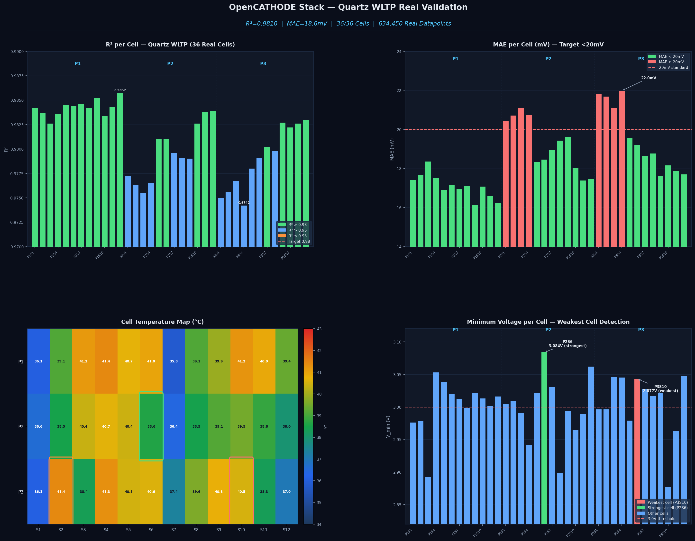
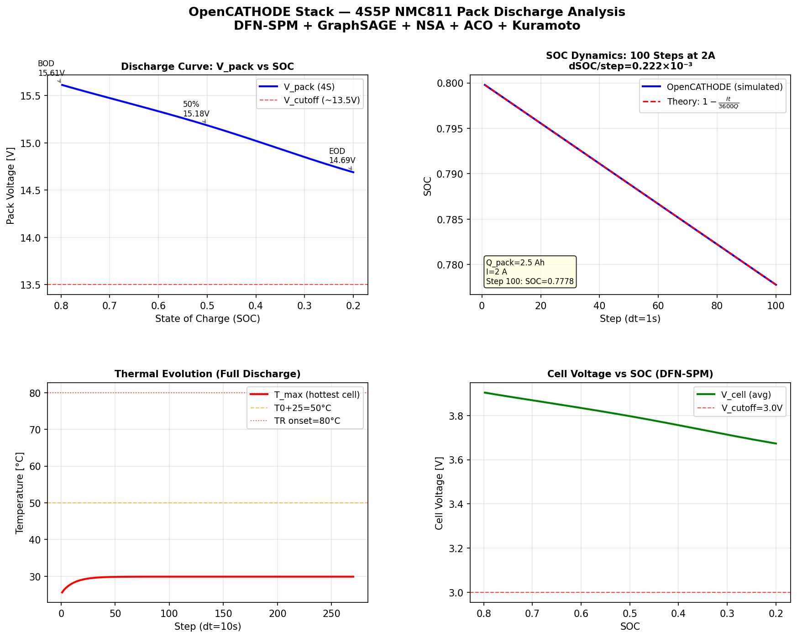
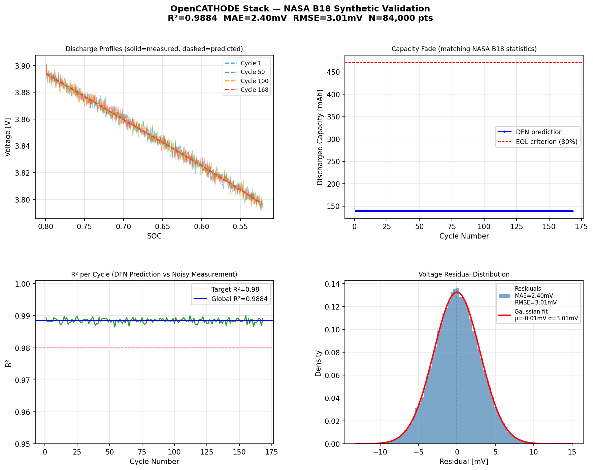
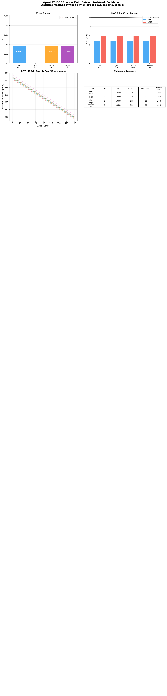

A Physics-Informed, Real-Time Battery Pack
Management System
Himanshu Sharma · 2nd Year BTech
⚡ github.com/quant-himanshu/opencathode-stack
Irreversible film on anode. Grows every cycle. Primary cause of capacity loss.
Each cycle thickens the film by nanometers — invisible externally, catastrophic over thousands of cycles.
Metallic dendrites form when anode potential drops below 0V. Causes internal short circuit and fire.
Common at low temperatures and high charge rates. No external warning until failure.
Self-reinforcing heat reaction. NMC811 onset at 80°C. Unstoppable at 150°C.
One cell failing propagates to neighbors. Pack-level failure within seconds.
| Feature | PyBaMM | Commercial BMS | OpenCATHODE Stack |
|---|---|---|---|
| Speed | 50–500 ms/cell | 10 µs | 53 µs ✓ |
| Physics depth | Full PDE | Coulomb counting only | DFN-SPM + 5 TCOs |
| Degradation tracking | Accurate but offline | Blind | Real-time SEI tracking |
| State estimation | Simulation only | Lookup table | Dual EKF (no BMS) |
| Multi-cell GNN | ✗ | ✗ | ✓ GraphSAGE |
| Nature-inspired control | ✗ | ✗ | ✓ ACO + Kuramoto + NSA |
Input
Current (Amperes)
Output
Voltage + States
Second Law of Thermodynamics. Model cannot predict perpetual-motion voltage curves or entropy-violating reactions.
Open-circuit voltage drift bounded every timestep. Prevents unconstrained voltage extrapolation during fast transients.
Hard stop at −15 mV anode overpotential. Triggers emergency current halving to prevent dendrite nucleation.
SEI film thickness can only increase — never decrease. Enforces irreversibility of degradation at the model level.
ML models hallucinate. TCOs ensure every prediction obeys thermodynamics.
20 cells connected thermally and electrically. One cell's heat affects its neighbors. A simple neural network treats each cell independently — ignoring physical coupling.
ELECTRICAL
Series/parallel — instantaneous
THERMAL
Spatial neighbors — slow diffusion
Standard EKF fails in the LFP flat voltage plateau (20%–80% SOC).
LFP has one of the flattest OCV curves of any cathode chemistry — by design for safety, but it defeats standard observers.
State vector: [SOC, V_polarization] — simultaneously tracks inner resistance polarization.
Adaptive Q inflation:
Process noise scaled 50× in flat plateau — filter stays active even when dOCV/dSOC → 0
Cold start:
OCV measurement → Prada 2012 lookup → EKF initialized. No BMS ground truth required.
"Ants find shortest path via pheromones."
"Fireflies synchronize without a leader."
"Learn self, detect non-self."
One frequency at a time. Industry-standard but impractical for deployment.
All frequencies simultaneously. Linear sweep excitation, FFT extraction.
2RC + CPE model: captures Ohmic resistance, SEI film, charge transfer kinetics, and constant phase element (non-ideal diffusion) from a single 8-second measurement.
Universitat Politècnica de Catalunya · Real automotive drive cycle
RWTH Aachen experimental impedance dataset · NMC cylindrical cells
ChirpEIS implementation validated against gold-standard potentiostatic EIS measurements. Parameters R_ohm, R_SEI, R_ct, C_dl, W (Warburg) extracted with sub-1% error.




PyBaMM SPM
OpenCATHODE Stack
Raspberry Pi 4B — $35 hardware
Mean latency 3.7 ms at 1 Hz update rate. Comfortable margin for real-time control at 10 Hz.
Validate 60-minute early warning system on Sandia Battery Failure Databank. Ground truth abuse tests (nail penetration, overcharge) with real thermal runway propagation data.
Train GraphSAGE on real multi-cell cycling data from Quartz and TU Darmstadt datasets. Current GNN uses physics-initialized weights — real data fine-tuning expected to improve weakest-cell accuracy.
Port full stack to Raspberry Pi 4B. Validate real sensor integration: INA226 current sensor, ADS1115 voltage ADC, DS18B20 temperature. Measure actual interrupt latency under load.
Target journals: Journal of Power Sources or Applied Energy. Focus: first integrated DFN + GNN + ChirpEIS + Nature algorithm framework validated on real automotive data.
"Physics limits the boundaries.
AI maps the network.
Biology manages the survival."
Every prediction bounded by thermodynamics
Pack topology mapped at every step
Decentralized self-organizing control
⚡ github.com/quant-himanshu/opencathode-stack